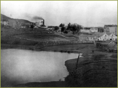
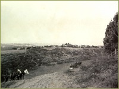
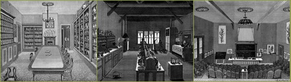
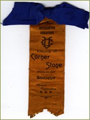
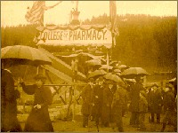
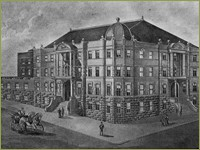
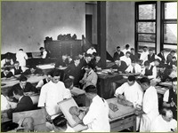

Building the Parnassus Campus

By the mid 1890s, as the content of medical science expanded, faculty and trustees of the three colleges were concerned, for, despite the fact that they were affiliated in name, their teaching facilities were scattered throughout the city, and the schools were rapidly running out of room to expand. In 1893 the Medical College Dean Robert McLean complained to the UC President that Toland Medical Building “has become unfit for the teaching of modern medicine.” The President in turn reported to the Governor that “the professional colleges in SF are still suffering for want of suitable accommodations…[they] are better housed and equipped than three years ago, but ask for ampler rooms.” In his 1893 report, Medical College Dean Robert McClean appealed to the UC President and the Regents, asking for support for a building for all the colleges, declaring that “Its influence upon the esprit de corps of the Faculties of the various affiliated colleges upon the university as a whole and upon the public at large could not be overestimated.” A committee comprised of faculty and alumni lobbied the legislature for three years, and finally in 1895 the Governor James H. Budd ( a California alumnus) approved the legislature’s unanimous appropriation of $250,000 for construction of the University colleges of medicine dentistry, pharmacy, veterinary medicine, and law.
View of Cole Valley looking east from Parnassus in 1892.

Controversy developed over the potential sites for the colleges, and as late as May 1895, seven different sites were still being considered. In July of 1895, San Francisco Mayor Adolph Sutro donated a 13-acre site overlooking Golden Gate Park for the proposed affiliated colleges. Some speculated that this generous donation was possibly a result of Beverly Cole's and Arnold D'Ancona's tactful persuasion, others were suspicious of Sutros’ motives. Several faculty disagreed with the choice of the Sutro site, considering the Parnassus shelf as totally inaccessible. Nevertheless a majority of faculty and alumni of the colleges eventually weighed in on the Sutro site, and records exist of the Pharmacy faculty’s trip to the site. After plans and bids were settled, construction began on October 20, 1896. One observer noted that “On request, the State Prison Directors supplied granite quarried by the prisoners of Folsom at a saving of $10,000, the medical faculty subscribed over $1,100 for plans, the architects reduced their fees, and builders accepted changes reasonably, and as the four structures rose, it was granted that planning and building were well and honestly done.”
Grading the site of the Affiliated Colleges, August 29, 1895, John Tuttle, contractor.

Faculty from the three colleges formed a “General Site and Building Committee of the Professional Departments of the University of California” to conduct research and oversee construction of the buildings. This Committee inspected building sites and surveyed eastern and midwestern schools for comparisons and direction on national trends in laboratory instruction. One surviving product of their diligent research was the 76-page “Inspection Report of Colleges of Pharmacy, conducted in summer of 1895 by a group consisting of Dr. Beverly Cole, F. A. Beckett of the California College of Pharmacy, and Albert Sutton, an architect. They spent two months visiting schools of pharmacy and laboratories in nine cities. The report was detailed and critical in tone. At one point the Pharmacy faculty upgraded laboratory facilties in the Fulton street building, and redoubled their efforts to create ideal modern teaching facilities in the new college buildings.

authors note sarcastically that one college had “a building rather more imposing than our own on the exterior, but in order to continue this desirable deceit, it is advisable to remain on the outside.” Their survey covered the minute details of laboratory furnishings and curriculum offerings, as well as the financial structure of the schools and salaries of faculty and janitors.
Colored ribbon from pharmacy cornerstone laying ceremony
Upon returning from his travels, F. A. Beckett approached the pharmacy faculty, convinced by of the urgent need for expanding laboratory instruction. He proposed conversion of the janitor’s quarters and sectioning off other rooms to create two additional labs, noting that the new college buildings at best would not be ready for three or four years, and “we could not afford to wait.” He went on to propose an additional year of instruction and the granting of a Pharm D degree for more advanced study. Arguing persuasively for immediate action, he declared “We have the opportunity now to establish our reputation as the leading [College of Pharmacy] for all time, and not only for the present.”

After five years of planning, construction and anticipation, the buildings of the Affiliated Colleges were ready for occupancy by 1898 and in October the Medical Department relocated. Pharmacy occupied its quarters over the Christmas holidays of 1898-1899. The buildings were impressive, but state support was limited to construction of the buildings themselves. The furnishing of labs and lecture halls was the responsibility of the college faculties and trustees. The Medical Department succeeded in developing a 1220-seat auditorium, the finest dissecting room in the world at the present time,” and “spacious laboratories for pathology, bacteriology, chemistry and physiology,” all featured in a glossy brochure.
Laying cornerstone for the Affiliated Colleges on a stormy day, March 27, 1897.

Pharmacy alumni hosted several events and sold tickets to help furnish the building. Once finished, the facilities were the source of much professional pride. The California College of Pharmacy Announcement for 1901 described a four-story building with 40,000 square feet “entirely devoted to pharmacy.” Facilities included a large general lecture hall designed to seat two hundred students; chemical, pharmaceutical, and microscopical labs designed to handle 100 students at a time; review classrooms, a museum, library, student’s study rooms, faculty and staff offices, store rooms, and a boiler room. The facility was designed to foster “a larger amount of personal contact between professor and pupil.”
Reproduction of pharmacy architect’s drawing as published in the Pacific Druggist

While dentistry’s clinical operations remained in the downtown Donohoe Building as before, the teaching space in the new Affiliated Colleges building contained several specialized dental labs, designed for detailed work in prosthetic dentistry. Other laboratories were designed for the teaching of bacteriology, chemistry and metallurgy. A special Technic room was outfitted for the teaching of operative and mechanical manipulations, “a leading feature in professional training.” By 1903, the Department’s Announcement listed “an original Jenkin’s porcelain outfit from Dresden, Germany, for “porcelain work is attracting more and more attention.” By the early twentieth century orthodontia had grown in importance and was taught in a full course. A physiology lab was equipped with kymographs., electro magnet chronographs, induction coils, moist chambers, a galvanometer and other instruments for experiments and measurements.
Specialized dentistry labs, 1903
>> 1899-1918: Early Academic Programs and Teaching Hospitals
{% include footer.html %}